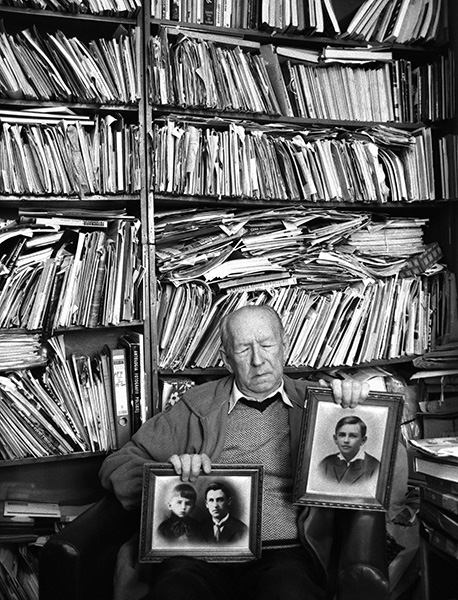

Opowieści spoza obrazów. Fotografie Ewy Martyniszyn
5 października – 29 grudnia 2019
Kuratorka wystawy: Dorota Jasnowska
Wystawa jest podsumowaniem projektu artystycznego realizowanego przez artystkę w latach 2005–2006 na terenie województwa opolskiego, dolnośląskiego, śląskiego oraz na Ukrainie. Powstało wtedy 44 fotografii czarno-białych i barwnych oraz około 50 reprodukcji tzw. monideł, czyli ręcznie podkolorowanych lub preparowanych na bazie fotografii portretów o tematyce ślubnej, wojskowej czy komunijnej.
Projekt prowadzony był przez autorkę dwutorowo: z jednej strony reprodukowała tradycyjne monidła znajdujące się w prywatnych kolekcjach, równolegle nagrywając wypowiedzi osób występujących na portretach lub też ich bliskich, z drugiej strony fotografowała tę samą osobę, trzymającą portret lub ustawioną w jego pobliżu. Wystawa ukazuje kontrast pomiędzy wyidealizowanymi wizerunkami osób przedstawianych na monidłach a meandrami niedoskonałości życia człowieka. Celem artystki było ocalenie jednostkowych ludzkich istnień od zapomnienia, ale także ratowanie monideł od zniszczenia oraz przywrócenie im ważności i uwagi. Tytułowe „Opowieści spoza obrazów” dopełniają fotografie – zarówno te o charakterze dokumentalnym, wykonane w konwencji „Zapisu socjologicznego” Zofii Rydet, w którym portretowani patrzą prosto w obiektyw, jak i spreparowane monidła, ujawniając historie życia. Ewa Martyniszyn, absolwentka Akademii Sztuk Pięknych w Poznaniu, asystentka w Katedrze Sztuki Mediów Akademii Sztuk Pięknych im. E. Gepperta we Wrocławiu. Brała udział w licznych wystawach w kraju i za granicą. Ma na swoim koncie publikacje w książkach i czasopismach poświęconych sztuce. Od 2004 r. zajmuje się tematyką monideł, pisząc o nich, kolekcjonując je oraz tworząc własne, autorskie monidła w Pracowni Fotografii i Monideł.